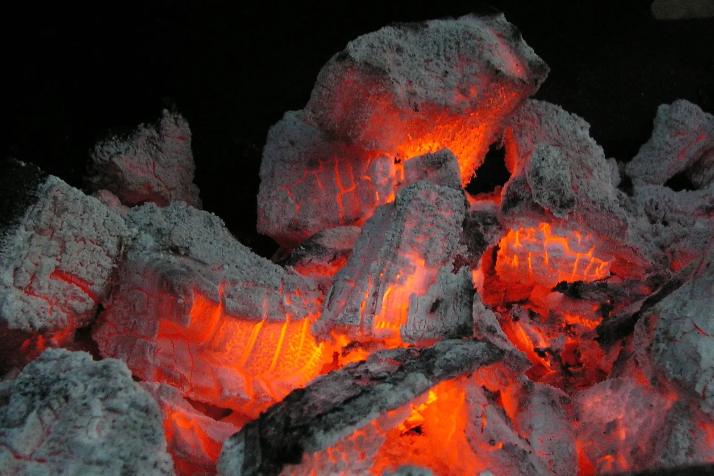
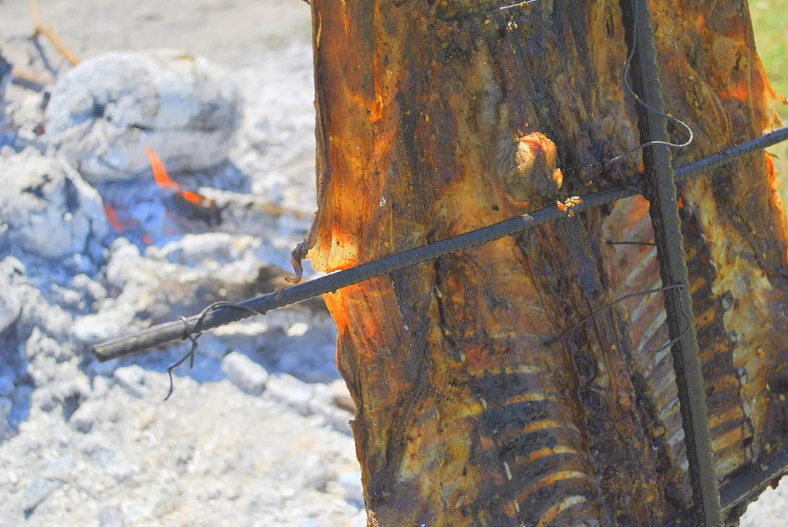
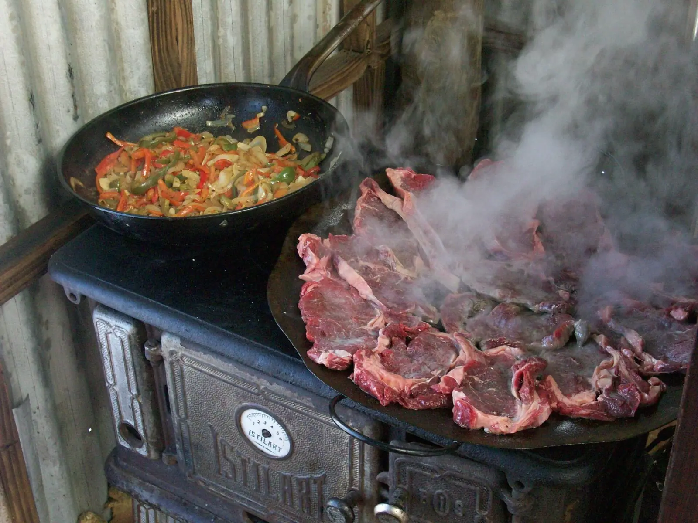
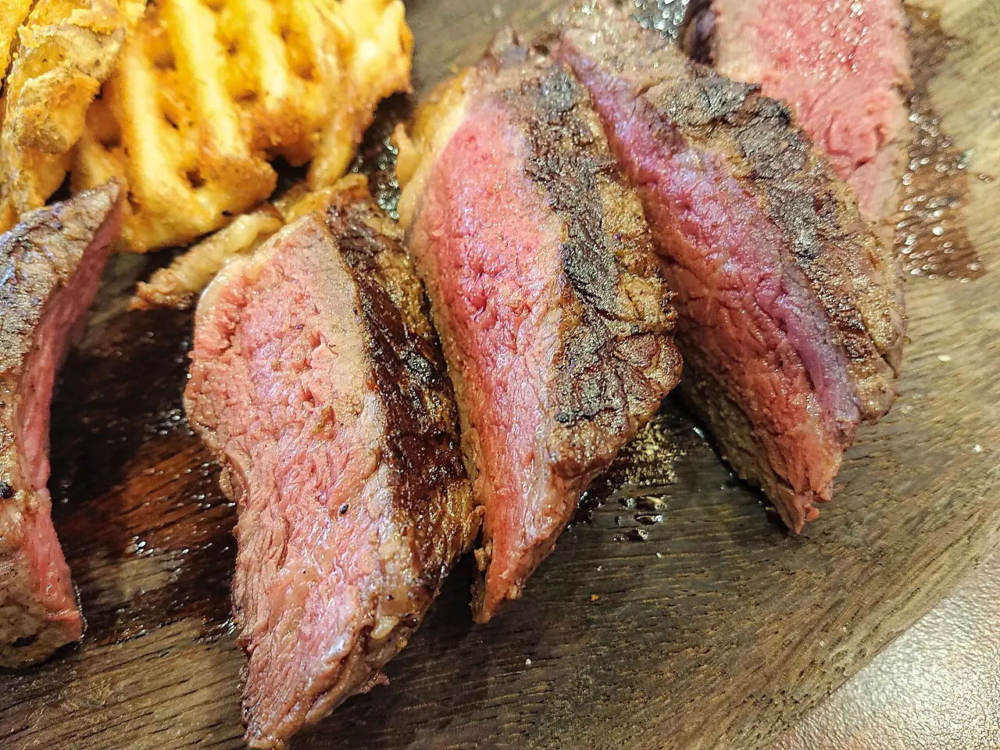
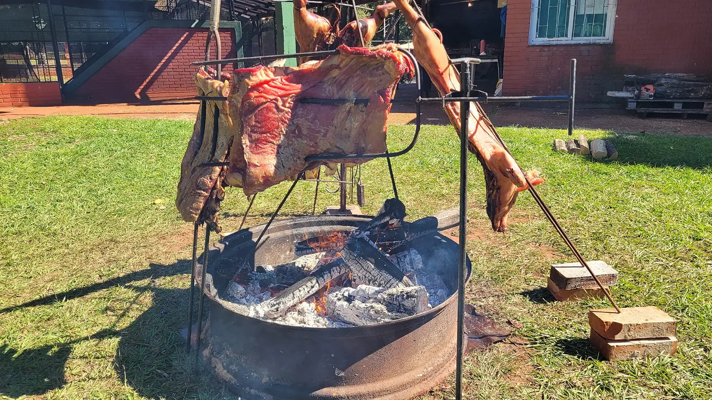
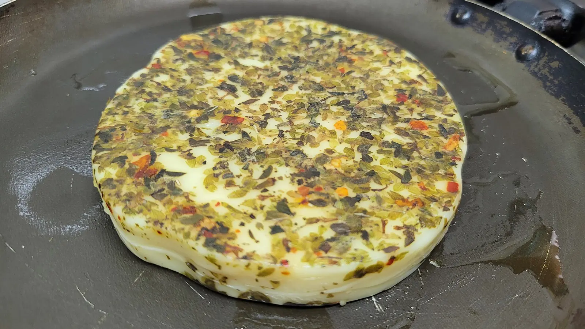

La leña
Prendemos quebracho a las 17 h. Tres horas después no queda llama: solo brasa pareja que no ahúma de más.
3horas de fuego antes del primer corte

Parrilla a leña · Abrimos a las 20 h
Cortes madurados 21 días, leña de quebracho y un parrillero que te pregunta cómo la querés. Esto se come mirando el fuego.
Cómo cocinamos



Paso 1 · La leñaPrendemos quebracho a las 17 h. Tres horas después no queda llama: solo brasa pareja que no ahúma de más.
El parrillero arrastra brasa debajo de cada corte según su grosor. Nada de gas, nada de plancha.
Sale cuando vos lo pediste, descansa dos minutos y llega a la mesa sobre tabla caliente.
Elegí tu punto
Centro rojo brillante y tibio. El punto que recomienda el parrillero para el ojo de bife.
Nuestra carta
Porciones individuales. Todas las carnes salen con sal parrillera y chimichurri aparte.
Madurado 21 días. El más pedido de la casa.
Fina, con su piel crocante. Va mejor jugosa.
Tres horas a fuego bajo hasta que se corta con cuchara.

2 pers.Vacío, chorizo, morcilla, molleja y provoleta.

1 u.Con orégano y ají, dorada en hierro.
Una noche en Brasa
Reservas